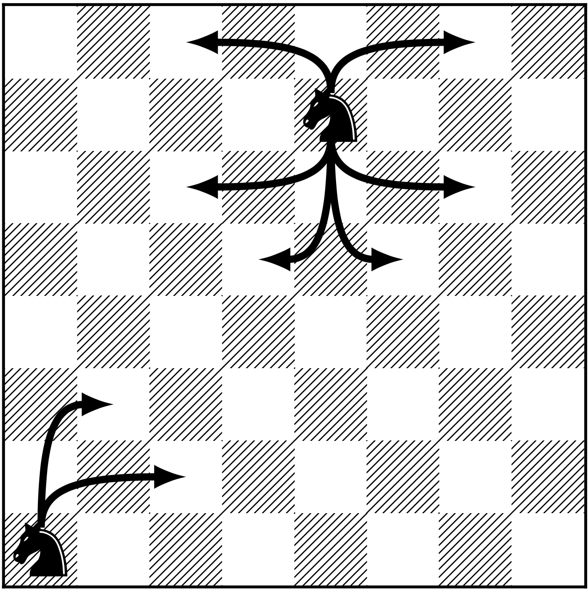

Lecture notes for "Introduction to Stochastic Processes"
last updated - 2021-11-10
Preface

This is an ever-evolving set of lecture notes for Introduction to Stochastic Processes (M362M). It should start with me explaining what stochastic processes are. Instead, here is a list of several questions you will be able to give answers to when you complete this course.
Question 1 In a simplistic model, the price of a share of a stock goes either up or down by \(\$1\) each day, with probability \(1/2\). You own a single share whose value today is \(\$100\), so that its tomorrow’s price will be \(\$101\) or \(\$99\) with probability \(1/2\), etc. Your strategy is to hold onto your share until one of the following two things happen: you go bankrupt (the stock price hits \(0\)), or you make a \(\$50\) dollar profit (the stock price hits \(\$150\).)
- How likely is it that you will make a profit before you go bankrupt?
- How long will it take?
- Is it possible that it takes forever, i.e., that the stock price hovers between \(\$1\) and \(\$149\) forever?
Question 2. A person carrying a certain disease infects a random number of people in a week, and then stops being infectious. Each of the infected people transmits the disease in the same way, etc. Suppose that the number of people each (infectious) individual infects is either \(0\), \(1\) or \(2\) or \(3\), each with probability \(1/4\) and that different infectious individuals may infect different number of people and behave independently of each other.
- What is the probability that the disease will ever be eradicated?
- What is the probability that every single individual in the population of \(328,000,000\) will eventually be infected?
Question 3. In a game of tennis, Player \(1\) wins against Player \(2\) in each rally (the smallest chunk of the match that leads to point, i.e., to a score change from \(15-30\) to \(30-30\), for example) with probability \(p\). What is the probability that Player \(1\) wins
- a game (the chunk of the match that leads to a score change such as \(5-3\) to \(6-3\) within a set)?
- a set? the entire match?
- Is the game of tennis set up in such a way that is amplifies or reduces the difference in skill between players?

Question 4. A knight starts in the lower left corner of the chess board and starts moving “randomly”. That means that from any position, it chooses one of the possible (legal) moves and takes it, with all legal moves having the same probability. It keeps doing the same thing until it comes back to the square it started from.
- What is the expected number of moves the knight will make before it returns to “square one”?
- How about the same problem, but using a different chess piece? Which one do you think will come back is the smallest (expected) number of steps?
- (*) How about the same problem, but until all squares have been visited at least once?
Question 5. How does Google search work?